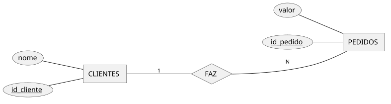
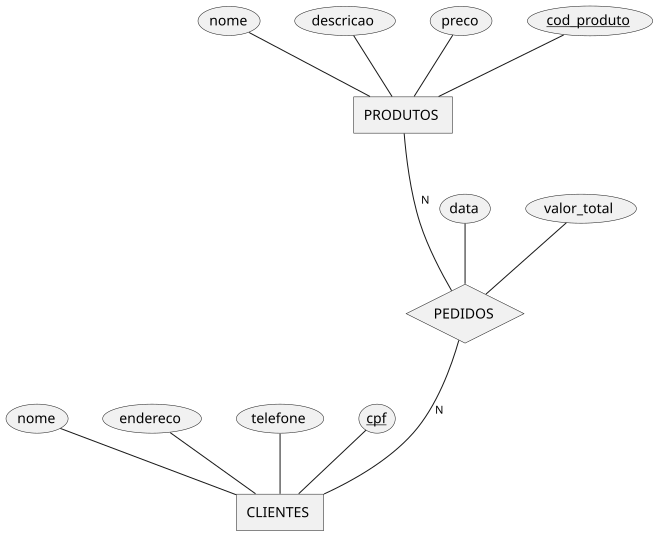
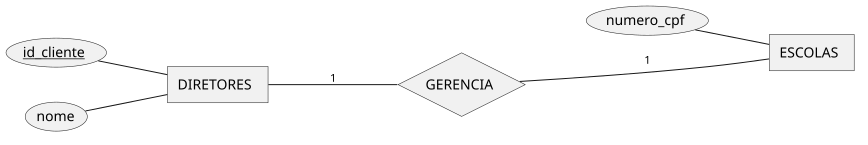
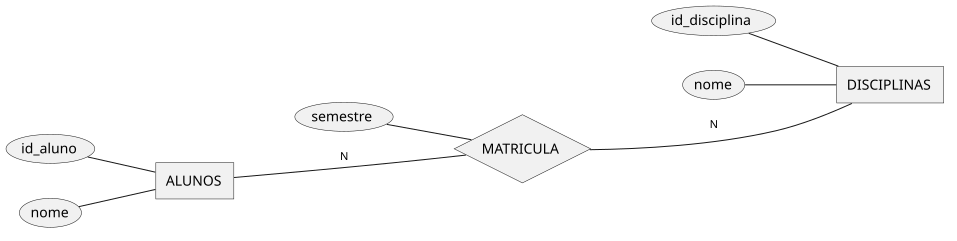
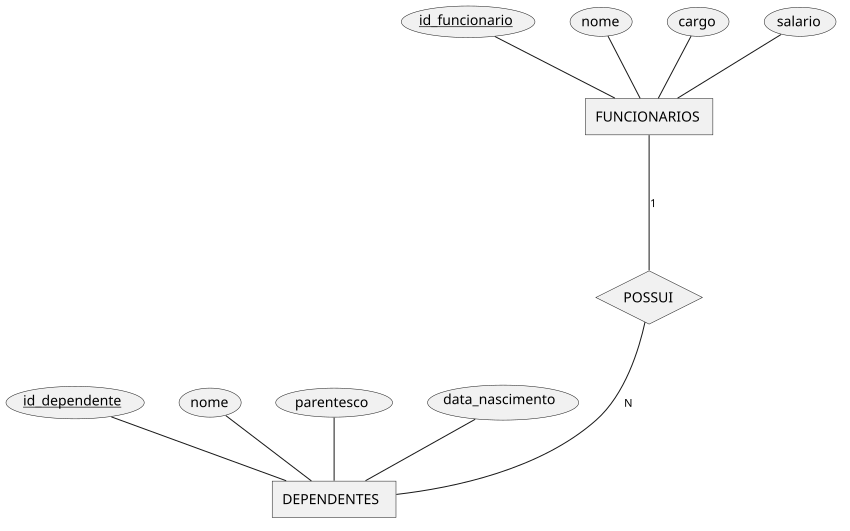
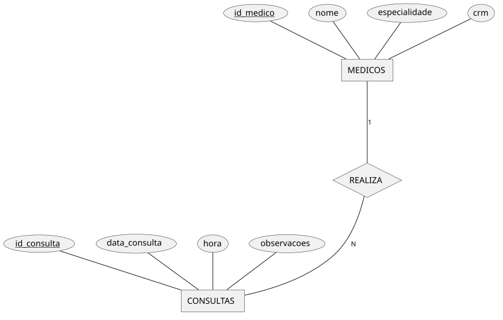
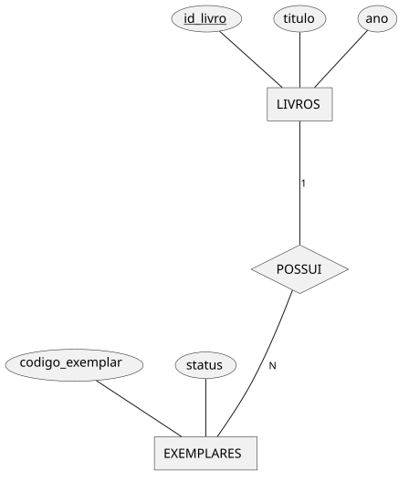
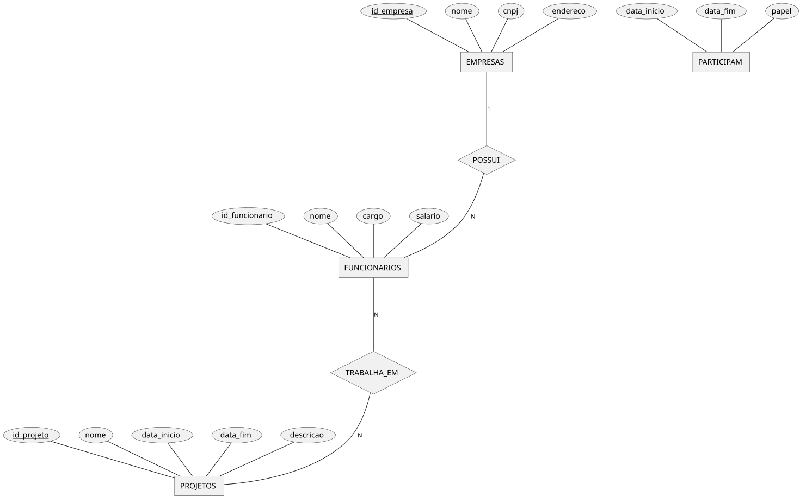

Slide 4 Modelagem de Bancos de Dados parte 02
4.1 Linguagem S.Q.L.
A linguagem SQL foi criada nos laboratórios da IBM em 1974, como interface de manipulação ao Bando de Dados Relacional System-R , atualmente denominado IBM DB2. Os criadores foram engenheiros de sistemas que sucederam o professor Edgard Frank Codd no projeto de Banco de Dados Relacional: Donald Chamberlain e Raymond Boyce.

Donald Chamberlain - Criador da linguagem SQL nos laboratórios da IBM
|

Raymond Boyce - Criador da linguagem SQL nos laboratórios da IBM
|
A lingauem SQL é a ponte com o mundo exterior para um Sistema de Gerenciamento de Banco de Dados (SGBD). Os conjunto de comandos da linguagem SQL são divididos em 3 grandes grupos:
\[ \begin{array}{c| c | c} \textbf{GRUPO} & \textbf{ Comandos} & \textbf{Finalidade} \\ \hline Grupo \ DDL & \quad \ Data \ Definion \ Language & \quad Criar \ estruturas \ de \ dados \\ Grupo \ DML & \quad \ Data \ Manipulation \ Language & \quad Manipular \ dados \ armazenados \\ Grupo \ DCL & \quad \ Data \ Control \ Language & \quad Criar \ Regras \ para \ os \ dados \\ Grupo \ TCL & \quad \ Transaction \ Control \ Language & \quad Criar \ Transações \ para \ os \ dados \\ \hline \textbf{Subconjunto SQL } & \textbf{ Significado } & \textbf{ Conjunto Completo } \end{array} \]
4.2 SQL e MODELAGEM
4.3 SQL e TRATAMENTO DE DADOS
4.3.1 SQL - DML (DATA MANIPULATION LANGUAGE) - Inserindo dados nas estruturas do Banco de Dados
A DML é responsável por manipular os dados armazenados nas tabelas. Também é responsável por implementar as operações de Algebra Relacional propostas por Codd que vão operacionalizar os dados armazenados:
| Comando | Função |
|---|---|
INSERT |
inserir dados |
UPDATE |
atualizar dados |
DELETE |
remover dados |
4.4 Algebra Relacional
Segundo Abraham Silberschatz no livro Database System Concepts:
Álgebra Relacional é uma coleção de operações que recebem uma ou duas relações como entrada e produzem uma nova relação como resultado.
São basicamente 8 operações herdadas da Teoria do Conjuntos:
| Álgebra Relacional | Significado | SQL equivalente |
|---|---|---|
σ condição (R) |
seleção de linhas | SELECT * FROM R WHERE condição |
π atributos (R) |
projeção de colunas | SELECT atributos FROM R |
R ∪ S |
união | SELECT ... FROM R UNION SELECT ... FROM S |
R − S |
diferença | SELECT ... FROM R EXCEPT SELECT ... FROM S |
R ∩ S |
interseção | SELECT ... FROM R INTERSECT SELECT ... FROM S |
R × S |
produto cartesiano | SELECT * FROM R CROSS JOIN S |
R ⋈ condição S |
junção | SELECT * FROM R JOIN S ON condição |
ρ novo_nome (R) |
renomeação | FROM R AS novo_nome |
4.4.1 Operação SELEÇÃO ( letra sigma σ )
A *SELEÇÃO* filtra linhas da tabela de acordo com uma condição lógica. Ela não altera as colunas, apenas escolhe quais tuplas permanecem na relação. Equivale a um filtro de linhas.
\(\sigma_{salario > 3000}(Funcionario)\)
Exemplo 1 -
4.4.2 Operação PROJEÇÃO ( letra PI π )
A PROJEÇÃO seleciona colunas da tabela. Ela remove atributos que não são desejados. Equivale a um filtro de colunas.
Exemplo 2 -
\(\pi_{nome, salario}(Funcionario)\)
4.4.3 Operação UNIÃO ( ∪ )
A *UNIÃO* combina as tuplas de duas relações. Para isso, as relações precisam ser compatíveis, ou seja:
- A)mesmo número de atributos;
- B)mesmos domínios (tipos) de dados;
$ R S $
Exemplo 3 -
4.4.4 Operação DIFERENÇA ( - )
A *DIFERENÇA* entre duas relações R e S retorna as tuplas (linhas) que estão em uma relação mas não estão na outra.
\(R - S\)
Exemplo 4 -
4.4.5 Operação INTERSECÇÃO ( ∩ )
A *INTERSECÇÃO* entre duas relações R e S retorna apenas as tuplas que aparecem nas duas relações ao mesmo tempo.
\(R \cap S\)
Exemplo 5 -
4.4.6 Operação PRODUTO CARTESIANO ( × )
O *PRODUTO CARTESIANO* entre duas relações R e S combina cada tupla de uma relação com todas as tuplas de outra relação.
Exemplo 6 -
\(R \times S\)
4.4.7 Operação JUNÇÃO NATURAL ( ⋈ )
A *JUNÇÃO NATURAL* combina duas relações com base em uma condição entre atributos de ambas;
\(Funcionario \bowtie_{Funcionarios.depto\_id = Departamentos.id} Departamento\)
Exemplo 7 -
4.5 SQL - USO AVANÇADO DE MANIPULAÇÃO DE DADOS:
4.5.1 Operação de Junção JOIN
A Operação JOIN possui alguns refinamentos:
| Tipo | Resultado |
|---|---|
| INNER JOIN | apenas registros correspondentes |
| LEFT JOIN | todos da esquerda |
| RIGHT JOIN | todos da direita |
| FULL JOIN | todos de ambas |
Para demonstra-los, vamos tomar duas Relações (tabelas) como exemplo:

4.5.1.1 JUNÇÃO SIMPLES (JOIN)
O JOIN combina dados de duas ou mais tabelas. A junção é baseada em uma condição de relacionamento.
4.5.1.2 JUNÇÃO INTERNA (INNER JOIN)
O INNER JOIN retorna apenas registros que possuem correspondência nas duas tabelas.
SELECT cliente.nome, pedido.valor
FROM cliente
INNER JOIN pedido
ON cliente.id_cliente = pedido.id_cliente;Saída:
| nome | valor |
|---|---|
| Ana | 200 |
| Ana | 150 |
| Carlos | 300 |
4.5.1.3 JUNÇÃO A ESQUERDA (LEFT JOIN)
O LEFT JOIN retorna todos os registros da tabela da esquerda. Mesmo que não exista correspondência na outra tabela.
SELECT cliente.nome, pedido.valor
FROM cliente
LEFT JOIN pedido
ON cliente.id_cliente = pedido.id_cliente;Saída:
| nome | valor |
|---|---|
| Ana | 200 |
| Ana | 150 |
| Carlos | 300 |
| Maria | NULL |
4.5.2 Operação de AGRUPAMENTO de dados GROUP BY
Considere ainda as RELAÇÕES (tabelas) do exemplo anterior, CLIENTES e PEDIDOS:
Para demonstra-los, vamos tomar duas Relações (tabelas) como exemplo:

4.5.2.0.2 Tabela PEDIDOS
| id_pedido | id_cliente | valor |
|---|---|---|
| 101 | 1 | 200 |
| 102 | 1 | 150 |
| 103 | 2 | 300 |
O comando GROUP BY é usado para agrupar registros.
Normalmente é utilizado junto com funções de agregação.
| Função | Descrição |
|---|---|
| COUNT() | contar registros |
| SUM() | soma |
| AVG() | média |
| MAX() | maior valor |
| MIN() | menor valor |
Saída:
| id_cliente | total_pedidos |
|---|---|
| 1 | 2 |
| 2 | 1 |
4.5.3 Operação de filtragem de grupos de dados HAVING
O comando HAVING é usado para filtrar grupos. Diferença importante com o WHERE:
| Comando | Atua sobre |
|---|---|
| WHERE | linhas |
| HAVING | grupos |
Exemplo 1 - Considerando as tabelas do pedido anterior, selecione os clientes com mais de um pedido:
Saída:
| id_cliente | total_pedidos |
|---|---|
| 1 | 2 |
4.6 REFRÊNCIAS:
SILBERSCHATZ, Abraham; KORTH, Henry F.; SUDARSHAN, S. Database System Concepts. 7. ed. New York: McGraw-Hill Education, 2019.
4.7 Exercícios RESOLVIDOS
| Exercício 1 — Universidade |
|---|
| Considere uma Universidade que possui vários Cursos. Cada curso tem um nome, uma duração em semestres e um coordenador. A universidade possui Professores, cada um com um nome, título e CPF. Um professor pode ministrar várias disciplinas, e cada disciplina pertence a um único curso. |
|
DIAGRAMA ENTIDADE-RELACIONAMENTO (D.E.R.) com as informações levantadas:

4.7.0.1 Criando o código SQL referente ao diagrama apresentado:
/* =========================================================
Passo 1️- CRIAR TABELAS (somente colunas, sem PK nem FK)
========================================================= */
CREATE TABLE UNIVERSIDADES
(
nome VARCHAR(255),
CNPJ VARCHAR(14)
);
CREATE TABLE CURSOS
(
nome VARCHAR(255),
duracao INT,
coordenador VARCHAR(255),
codigo_curso INTEGER
);
CREATE TABLE PROFESSORES
(
cpf VARCHAR(11),
nome VARCHAR(255),
titulo VARCHAR(255)
);
CREATE TABLE DISCIPLINAS
(
nome VARCHAR(255),
codigo_disciplina INTEGER
);
/* =========================================================
Passo 2- ADICIONAR CHAVES PRIMÁRIAS
========================================================= */
ALTER TABLE UNIVERSIDADES ADD PRIMARY KEY (CNPJ);
ALTER TABLE CURSOS ADD PRIMARY KEY (codigo_curso);
ALTER TABLE PROFESSORES ADD PRIMARY KEY (cpf);
ALTER TABLE DISCIPLINAS ADD PRIMARY KEY (codigo_disciplina);
/* =========================================================
Passo 3- CRIAR COLUNAS PARA FUTURAS CHAVES ESTRANGEIRAS
-- Sempre no lado N de cada relacionamento
========================================================= */
-- UNIVERSIDADES (1) —— (N) CURSOS → CURSOS precisa de CNPJ
ALTER TABLE CURSOS ADD COLUMN CNPJ VARCHAR(14);
-- UNIVERSIDADES (1) —— (N) PROFESSORES → PROFESSORES precisa de CNPJ
ALTER TABLE PROFESSORES ADD COLUMN CNPJ VARCHAR(14);
-- PROFESSORES (1) —— (N) DISCIPLINAS → DISCIPLINAS precisa de cpf
ALTER TABLE DISCIPLINAS ADD COLUMN cpf VARCHAR(11);
/* =========================================================
Passo 4- CRIAR AS CHAVES ESTRANGEIRAS
========================================================= */
ALTER TABLE CURSOS ADD CONSTRAINT fk_cursos_universidade FOREIGN KEY (CNPJ) REFERENCES UNIVERSIDADES (CNPJ);
ALTER TABLE PROFESSORES ADD CONSTRAINT fk_professores_universidade FOREIGN KEY (CNPJ) REFERENCES UNIVERSIDADES (CNPJ);
ALTER TABLE DISCIPLINAS ADD CONSTRAINT fk_disciplinas_professor FOREIGN KEY (cpf) REFERENCES PROFESSORES (cpf);| Exercício 2 — Um Projeto de e-commerce |
|---|
 |
| Um Cliente faz Pedidos em um sistema de e-commerce. Cada cliente tem um nome, endereço e telefone. Os pedidos possuem uma data, um valor total e podem conter vários Produtos. Cada produto tem um nome, uma descrição e um preço. |
|
DIAGRAMA ENTIDADE-RELACIONAMENTO (D.E.R.) apresentado:

4.7.0.2 Criando o código SQL referente ao diagrama apresentado:
-- CRIAR AS TABELAS
CREATE TABLE Cliente
(
id_cliente INT,
nome VARCHAR(255)
);
CREATE TABLE CPF
(
numero_cpf CHAR(11)
);
-- ADICIONAR AS CHAVES PRIMÁRIAS
ALTER TABLE Cliente ADD PRIMARY KEY (id_cliente);
ALTER TABLE CPF ADD PRIMARY KEY (numero_cpf);
-- O relacionamento é 1:1. Podemos escolher um dos lados para armazenar a chave.
-- Aqui vamos seguir o diagrama, colocando a chave estrangeira de CPF em Cliente.
ALTER TABLE Cliente ADD COLUMN numero_cpf CHAR(11);
-- CRIAR AS CHAVES ESTRANGEIRAS
ALTER TABLE Cliente ADD CONSTRAINT fk_cliente_cpf FOREIGN KEY (numero_cpf) REFERENCES CPF (numero_cpf);| Exercício 3 — Hospital |
|---|
| Um Hospital registra Pacientes, cada um com nome, idade, endereço e telefone. Os pacientes podem realizar várias Consultas com Médicos. Cada médico possui um CRM, um nome e uma especialidade. Durante a consulta, o médico pode prescrever Receitas, que possuem medicação e dosagem. |
|
DIAGRAMA ENTIDADE-RELACIONAMENTO (D.E.R.) apresentado:

4.7.0.3 Criando o código SQL referente ao diagrama apresentado:
/* =========================================================
Passo 1- TABELAS (apenas colunas, sem PK ou FK)
========================================================= */
CREATE TABLE HOSPITAIS
(
nome VARCHAR(255),
cnpj CHAR(14)
);
CREATE TABLE PACIENTES
(
nome VARCHAR(255),
idade INT,
endereco VARCHAR(255),
telefone VARCHAR(20),
cpf CHAR(11)
);
CREATE TABLE MEDICOS
(
nome VARCHAR(255),
especialidade VARCHAR(255),
crm CHAR(15)
);
/* As próximas tabelas representam os relacionamentos N:M
com atributos próprios (tabelas de junção) */
CREATE TABLE REGISTRAM
(
-- sem colunas de FK por enquanto
);
CREATE TABLE CONSULTAM
(
data_consulta DATE,
hora TIME,
sala VARCHAR(50)
);
CREATE TABLE RECEITAM
(
medicacao VARCHAR(255),
dosagem VARCHAR(100)
);
/* =========================================================
Passo 2- ADICIONAR CHAVES PRIMÁRIAS
========================================================= */
ALTER TABLE HOSPITAIS ADD PRIMARY KEY (cnpj);
ALTER TABLE PACIENTES ADD PRIMARY KEY (cpf);
ALTER TABLE MEDICOS ADD PRIMARY KEY (crm);
/* Para tabelas de relacionamento com atributos, a PK será composta
(as FKs a serem criadas formarão a chave primária). Faremos isso depois
de adicionar as colunas de FK. */
/* =========================================================
Passo 3- CRIAR COLUNAS PARA FUTURAS CHAVES ESTRANGEIRAS
========================================================= */
-- REGISTRAM: HOSPITAIS (1) —— (N) PACIENTES
ALTER TABLE REGISTRAM ADD COLUMN cnpj CHAR(14), ADD COLUMN cpf CHAR(11);
-- CONSULTAM: MEDICOS (N) —— (N) PACIENTES
ALTER TABLE CONSULTAM ADD COLUMN crm CHAR(15), ADD COLUMN cpf CHAR(11);
-- RECEITAM: MEDICOS (N) —— (N) PACIENTES
ALTER TABLE RECEITAM ADD COLUMN crm CHAR(15), ADD COLUMN cpf CHAR(11);
/* =========================================================
Passo 4- CRIAR CHAVES ESTRANGEIRAS
========================================================= */
ALTER TABLE REGISTRAM
ADD CONSTRAINT fk_registram_hospitais
FOREIGN KEY (cnpj)
REFERENCES HOSPITAIS (cnpj),
ADD CONSTRAINT fk_registram_pacientes
FOREIGN KEY (cpf)
REFERENCES PACIENTES (cpf);
ALTER TABLE CONSULTAM
ADD CONSTRAINT fk_consultam_medicos
FOREIGN KEY (crm)
REFERENCES MEDICOS (crm),
ADD CONSTRAINT fk_consultam_pacientes
FOREIGN KEY (cpf)
REFERENCES PACIENTES (cpf);
ALTER TABLE RECEITAM
ADD CONSTRAINT fk_receitam_medicos
FOREIGN KEY (crm)
REFERENCES MEDICOS (crm),
ADD CONSTRAINT fk_receitam_pacientes
FOREIGN KEY (cpf)
REFERENCES PACIENTES (cpf);
/* Definir chaves primárias compostas para tabelas de relacionamento */
ALTER TABLE REGISTRAM ADD PRIMARY KEY (cnpj, cpf);
ALTER TABLE CONSULTAM ADD PRIMARY KEY (crm, cpf, data_consulta, hora);
ALTER TABLE RECEITAM ADD PRIMARY KEY (crm, cpf, medicacao);4.7.2 📝 Lista de Exercícios – Modelo Entidade-Relacionamento (MER)
4.7.2.1 Exercício 1 – Cliente e CPF (1:1)

| Considere um projeto de Banco de Dados de uma escola. Faça a modelagem utilizando o Modelo Entidade-Relacionamento de Peter Chen (M.E.R.). |
|

4.7.2.2 Exercício 2 – Cliente e Pedidos (1:N)

| Considere um projeto de Banco de Dados de uma escola. Faça a modelagem utilizando o Modelo Entidade-Relacionamento de Peter Chen (M.E.R.). |
|

4.7.2.3 Exercício 3 – Alunos e Disciplinas (N:M)

| Considere um projeto de Banco de Dados de uma escola. Faça a modelagem utilizando o Modelo Entidade-Relacionamento de Peter Chen (M.E.R.). |
|

4.7.2.4 Exercício 4 – Funcionário e Dependentes (Entidade Fraca)

| Considere um projeto de Banco de Dados de uma escola. Faça a modelagem utilizando o Modelo Entidade-Relacionamento de Peter Chen (M.E.R.). |
|

4.7.2.5 Exercício 5 – Pedido e Itens de Pedido (Entidade Associativa + Fraca)

| Considere um projeto de Banco de Dados de uma escola. Faça a modelagem utilizando o Modelo Entidade-Relacionamento de Peter Chen (M.E.R.). |
|

4.7.2.6 Exercício 6 – Médicos e Consultas (1:N)
| Considere um projeto de Banco de Dados de uma escola. Faça a modelagem utilizando o Modelo Entidade-Relacionamento de Peter Chen (M.E.R.). |
|

4.7.2.7 Exercício 7 – Professor e Departamento (1:1)

| Considere um projeto de Banco de Dados de uma escola. Faça a modelagem utilizando o Modelo Entidade-Relacionamento de Peter Chen (M.E.R.). |
|

4.7.2.8 Exercício 8 – Livros e Autores (N:M)

| Considere um projeto de Banco de Dados de uma escola. Faça a modelagem utilizando o Modelo Entidade-Relacionamento de Peter Chen (M.E.R.). |
|

4.7.2.9 Exercício 9 – Biblioteca (Entidades Fortes e Fracas)

| Considere um projeto de Banco de Dados de uma escola. Faça a modelagem utilizando o Modelo Entidade-Relacionamento de Peter Chen (M.E.R.). |
|

4.7.2.10 Exercício 10 – Empresa, Funcionário e Projeto (Misto 1:N e N:M)
| Considere um projeto de Banco de Dados de uma escola. Faça a modelagem utilizando o Modelo Entidade-Relacionamento de Peter Chen (M.E.R.). |
|

4.7.3 Respostas dos Exercícios:
4.7.3.1 Exercício #1

4.7.3.1.1 Exercício 1 - SQL referênte ao diagrama anterior
/* =========================================================
TRANSFORMA AS ENTIDADES EM TABELAS E ATRIBUTOS EM COLUNAS
========================================================= */
CREATE TABLE CLIENTES
(
id_cliente INTEGER,
nome VARCHAR(255)
);
CREATE TABLE CPFS
(
numero_cpf CHAR(11)
);
/* =========================================================
Definir chaves primárias
========================================================= */
ALTER TABLE CLIENTES ADD PRIMARY KEY (id_cliente);
ALTER TABLE CPFS ADD PRIMARY KEY (numero_cpf);
/* =========================================================
Criar coluna para futura chave estrangeira
========================================================= */
-- Relacionamento 1:1 (um cliente possui um CPF)
-- Vamos colocar a FK na tabela CLIENTES
ALTER TABLE CLIENTES ADD COLUMN numero_cpf CHAR(11);
/* =========================================================
Criar chave estrangeira
========================================================= */
ALTER TABLE CLIENTES ADD CONSTRAINT fk_clientes_cpfs FOREIGN KEY (numero_cpf) EFERENCES CPFS (numero_cpf);4.7.3.2 Exercício #2

4.7.3.2.1 Exercício 2 - SQL referênte ao diagrama anterior
/* =========================================================
Criar tabelas (sem PK ou FK)
========================================================= */
CREATE TABLE CLIENTES
(
cpf CHAR(11),
nome VARCHAR(255)
);
CREATE TABLE PEDIDOS
(
cod_pedido INT,
data DATE,
valor_total DECIMAL(10,2)
);
/* =========================================================
Definir chaves primárias
========================================================= */
ALTER TABLE CLIENTES ADD PRIMARY KEY (cpf);
ALTER TABLE PEDIDOS ADD PRIMARY KEY (cod_pedido);
/* =========================================================
Criar coluna para futura chave estrangeira
========================================================= */
-- Relacionamento CLIENTES 1:N PEDIDOS
ALTER TABLE PEDIDOS ADD COLUMN cpf_cliente CHAR(11);
/* =========================================================
Criar chave estrangeira
========================================================= */
ALTER TABLE PEDIDOS ADD CONSTRAINT fk_pedidos_clientes FOREIGN KEY (cpf_cliente) REFERENCES CLIENTES (cpf);4.7.3.3 Exercício #3

4.7.3.3.1 Exercício 3 - SQL referênte ao diagrama anterior
/* =========================================================
Criar tabelas (sem PK ou FK)
========================================================= */
CREATE TABLE ALUNOS
(
id_aluno INT,
nome VARCHAR(255)
);
CREATE TABLE DISCIPLINAS
(
id_disciplina INT,
nome VARCHAR(255)
);
/* Tabela para o relacionamento N:M */
CREATE TABLE MATRICULA
(
semestre VARCHAR(10)
);
/* =========================================================
Definir chaves primárias
========================================================= */
ALTER TABLE ALUNOS ADD PRIMARY KEY (id_aluno);
ALTER TABLE DISCIPLINAS ADD PRIMARY KEY (id_disciplina);
/* A PK da tabela MATRICULA será composta pelas FKs */
-- Definiremos depois de criar as colunas de FK
/* =========================================================
Criar colunas para futuras chaves estrangeiras (lado N)
========================================================= */
ALTER TABLE MATRICULA ADD COLUMN id_aluno INT, ADD COLUMN id_disciplina INT;
/* =========================================================
Criar chaves estrangeiras
========================================================= */
ALTER TABLE MATRICULA ADD CONSTRAINT fk_matricula_aluno FOREIGN KEY (id_aluno) REFERENCES ALUNOS (id_aluno);
ALTER TABLE MATRICULA ADD CONSTRAINT fk_matricula_disciplina FOREIGN KEY (id_disciplina) REFERENCES DISCIPLINAS (id_disciplina);
/* =========================================================
Definir chave primária composta da tabela MATRICULA
========================================================= */
ALTER TABLE MATRICULA ADD PRIMARY KEY (id_aluno, id_disciplina);4.7.3.4 Exercício #4
4.7.3.4.1 Exercício 4 - SQL referênte ao diagrama anterior
/* =========================================================
Criar tabelas (sem PK ou FK)
========================================================= */
CREATE TABLE FUNCIONARIOS
(
id_funcionario INT,
nome VARCHAR(255),
cargo VARCHAR(100),
salario DECIMAL(10,2)
);
CREATE TABLE DEPENDENTES
(
id_dependente INT,
nome VARCHAR(255),
parentesco VARCHAR(50),
data_nascimento DATE
);
/* =========================================================
Definir chaves primárias
========================================================= */
ALTER TABLE FUNCIONARIOS ADD PRIMARY KEY (id_funcionario);
ALTER TABLE DEPENDENTES ADD PRIMARY KEY (id_dependente);
/* =========================================================
Criar coluna para futura chave estrangeira
========================================================= */
-- Relacionamento FUNCIONARIOS 1:N DEPENDENTES
ALTER TABLE DEPENDENTES ADD COLUMN id_funcionario INT;
/* =========================================================
Criar chave estrangeira
========================================================= */
ALTER TABLE DEPENDENTES ADD CONSTRAINT fk_dependentes_funcionarios FOREIGN KEY (id_funcionario) REFERENCES FUNCIONARIOS (id_funcionario);4.7.3.5 Exercício #5

4.7.3.5.1 Exercício 5 - SQL referênte ao diagrama anterior
/* =========================================================
Criar tabelas (sem PK ou FK)
========================================================= */
CREATE TABLE PEDIDOS
(
id_pedido INT,
data_pedido DATE,
valor_total DECIMAL(10,2),
status VARCHAR(50)
);
CREATE TABLE ITENS
(
id_item INT,
descricao VARCHAR(255),
quantidade INT,
preco_unitario DECIMAL(10,2)
);
/* =========================================================
Definir chaves primárias
========================================================= */
ALTER TABLE PEDIDOS ADD PRIMARY KEY (id_pedido);
ALTER TABLE ITENS ADD PRIMARY KEY (id_item);
/* =========================================================
Criar coluna para futura chave estrangeira
========================================================= */
-- Relacionamento PEDIDOS 1:N ITENS
ALTER TABLE ITENS ADD COLUMN id_pedido INT;
/* =========================================================
Criar chave estrangeira
========================================================= */
ALTER TABLE ITENS ADD CONSTRAINT fk_itens_pedidos FOREIGN KEY (id_pedido) REFERENCES PEDIDOS (id_pedido);4.7.3.6 Exercício #6

4.7.3.6.1 Exercício 6 - SQL referênte ao diagrama anterior
/* =========================================================
Criar tabelas (sem PK ou FK)
========================================================= */
CREATE TABLE MEDICOS
(
id_medico INT,
nome VARCHAR(255),
especialidade VARCHAR(100),
crm VARCHAR(20)
);
CREATE TABLE CONSULTAS
(
id_consulta INT,
data_consulta DATE,
hora TIME,
observacoes VARCHAR(255)
);
/* =========================================================
Definir chaves primárias
========================================================= */
ALTER TABLE MEDICOS ADD PRIMARY KEY (id_medico);
ALTER TABLE CONSULTAS ADD PRIMARY KEY (id_consulta);
/* =========================================================
Criar coluna para futura chave estrangeira
========================================================= */
-- Relacionamento MEDICOS 1:N CONSULTAS
ALTER TABLE CONSULTAS ADD COLUMN id_medico INT;
/* =========================================================
Criar chave estrangeira
========================================================= */
ALTER TABLE CONSULTAS ADD CONSTRAINT fk_consultas_medicos FOREIGN KEY (id_medico) REFERENCES MEDICOS (id_medico);4.7.3.7 Exercício #7

4.7.3.7.1 Exercício 7 - SQL referênte ao diagrama anterior
/* =========================================================
Criar tabelas (sem PK ou FK)
========================================================= */
CREATE TABLE PROFESSORES
(
id_professor INT,
nome VARCHAR(255),
titulacao VARCHAR(100),
email VARCHAR(255)
);
CREATE TABLE DEPARTAMENTOS
(
id_departamento INT,
nome VARCHAR(255),
localizacao VARCHAR(255),
telefone VARCHAR(20)
);
/* =========================================================
Definir chaves primárias
========================================================= */
ALTER TABLE PROFESSORES ADD PRIMARY KEY (id_professor);
ALTER TABLE DEPARTAMENTOS ADD PRIMARY KEY (id_departamento);
/* =========================================================
Criar coluna para futura chave estrangeira
========================================================= */
-- Relacionamento 1:1 entre PROFESSORES e DEPARTAMENTOS
-- Aqui vamos colocar a FK em DEPARTAMENTOS, vinculando ao professor responsável
ALTER TABLE DEPARTAMENTOS ADD COLUMN id_professor INT;
/* =========================================================
Criar chave estrangeira
========================================================= */
ALTER TABLE DEPARTAMENTOS ADD CONSTRAINT fk_departamentos_professores FOREIGN KEY (id_professor) REFERENCES PROFESSORES (id_professor);4.7.3.8 Exercício #8

4.7.3.8.1 Exercício 8 - SQL referênte ao diagrama anterior
/* =========================================================
Criar tabelas (sem PK ou FK)
========================================================= */
CREATE TABLE LIVROS
(
id_livro INT,
titulo VARCHAR(255),
ano_publicacao INT,
editora VARCHAR(255)
);
CREATE TABLE AUTORES
(
id_autor INT,
nome VARCHAR(255),
nacionalidade VARCHAR(100)
);
/* Tabela para relacionamento N:M com atributos */
CREATE TABLE ESCREVEM
(
data_participacao DATE,
ordem_autoria INT
);
/* =========================================================
Definir chaves primárias
========================================================= */
ALTER TABLE LIVROS ADD PRIMARY KEY (id_livro);
ALTER TABLE AUTORES ADD PRIMARY KEY (id_autor);
/* =========================================================
Criar colunas para futuras chaves estrangeiras
========================================================= */
ALTER TABLE ESCREVEM ADD COLUMN id_livro INT, ADD COLUMN id_autor INT;
/* =========================================================
Criar chaves estrangeiras
=====================================
ALTER TABLE ESCREVEM ADD CONSTRAINT fk_escrevem_livros FOREIGN KEY (id_livro) REFERENCES LIVROS (id_livro);
ALTER TABLE ESCREVEM ADD CONSTRAINT fk_escrevem_autores FOREIGN KEY (id_autor) REFERENCES AUTORES (id_autor);
/* =========================================================
Definir chave primária composta da tabela ESCREVEM
========================================================= */
ALTER TABLE ESCREVEM ADD PRIMARY KEY (id_livro, id_autor);4.7.3.9 Exercício #9

4.7.3.9.1 Exercício 9 - SQL referênte ao diagrama anterior
/* =========================================================
Criar tabelas (sem PK ou FK)
========================================================= */
CREATE TABLE LIVROS
(
id_livro INT,
titulo VARCHAR(255),
ano INT
);
CREATE TABLE EXEMPLARES
(
codigo_exemplar INT,
status VARCHAR(50)
);
/* =========================================================
Definir chaves primárias
========================================================= */
ALTER TABLE LIVROS ADD PRIMARY KEY (id_livro);
/* A chave primária de EXEMPLARES será composta depois, usando FK + codigo_exemplar */
/* =========================================================
Criar coluna para futura chave estrangeira
========================================================= */
-- Relacionamento LIVROS 1:N EXEMPLARES
ALTER TABLE EXEMPLARES ADD COLUMN id_livro INT;
/* =========================================================
Criar chave estrangeira
========================================================= */
ALTER TABLE EXEMPLARES ADD CONSTRAINT fk_exemplares_livros FOREIGN KEY (id_livro) REFERENCES LIVROS (id_livro);
/* =========================================================
Definir chave primária composta da tabela EXEMPLARES
========================================================= */
ALTER TABLE EXEMPLARES ADD PRIMARY KEY (id_livro, codigo_exemplar);4.7.3.10 Exercício #10

4.7.3.10.1 Exercício 10 - SQL referênte ao diagrama anterior
/* =========================================================
Criar tabelas (sem PK ou FK)
========================================================= */
CREATE TABLE EMPRESAS (
id_empresa INT,
nome VARCHAR(255),
cnpj CHAR(14),
endereco VARCHAR(255)
);
CREATE TABLE FUNCIONARIOS (
id_funcionario INT,
nome VARCHAR(255),
cargo VARCHAR(100),
salario DECIMAL(10,2)
);
CREATE TABLE PROJETOS (
id_projeto INT,
nome VARCHAR(255),
data_inicio DATE,
data_fim DATE,
descricao VARCHAR(255)
);
CREATE TABLE PARTICIPAM (
data_inicio DATE,
data_fim DATE,
papel VARCHAR(100)
);
/* =========================================================
Definir chaves primárias
========================================================= */
ALTER TABLE EMPRESAS ADD PRIMARY KEY (id_empresa);
ALTER TABLE FUNCIONARIOS ADD PRIMARY KEY (id_funcionario);
ALTER TABLE PROJETOS ADD PRIMARY KEY (id_projeto);
/* A tabela PARTICIPAM terá PK composta, definida depois */
/* =========================================================
Criar colunas para futuras chaves estrangeiras
========================================================= */
-- Relacionamento EMPRESAS 1:N FUNCIONARIOS
ALTER TABLE FUNCIONARIOS ADD COLUMN id_empresa INT;
-- Relacionamento FUNCIONARIOS N:M PROJETOS
ALTER TABLE PARTICIPAM ADD COLUMN id_funcionario INT, ADD COLUMN id_projeto INT;
/* =========================================================
Criar chaves estrangeiras
========================================================= */
ALTER TABLE FUNCIONARIOS ADD CONSTRAINT fk_funcionarios_empresas FOREIGN KEY (id_empresa) REFERENCES EMPRESAS (id_empresa);
ALTER TABLE PARTICIPAM ADD CONSTRAINT fk_participam_funcionarios FOREIGN KEY (id_funcionario) REFERENCES FUNCIONARIOS (id_funcionario);
ALTER TABLE PARTICIPAM ADD CONSTRAINT fk_participam_projetos FOREIGN KEY (id_projeto) REFERENCES PROJETOS (id_projeto);
/* =========================================================
Definir chave primária composta da tabela PARTICIPAM
========================================================= */
ALTER TABLE PARTICIPAM ADD PRIMARY KEY (id_funcionario, id_projeto);